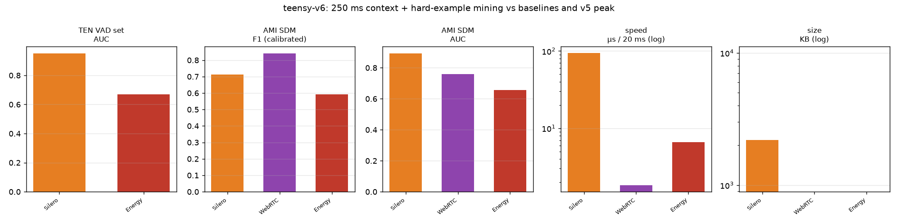

Shared protocol (human-labelled audio, AMI-dev-calibrated operating points, AUC on raw probabilities):
| v6-a1 | v6-a2 (recommended) | v6-c (mining) | v5-80k (prev. peak) | Silero | |
|---|---|---|---|---|---|
| context | 250 ms | 250 ms | 100 ms | 100 ms | recurrent |
| params | 24,441 | 49,249 | 20,449 | 80,373 | 1,774,000 |
| npz / int8 onnx (KB) | 96 / 26 | 204 / 50 | 87 / 22 | 321 / 26 | 2,200 |
| TEN F1 (best thr*) | 0.9081 | 0.9081 | 0.8957 | 0.9016 | 0.938 |
| TEN AUC | 0.8834 | 0.8870 | 0.8799 | 0.8877 | 0.9519 |
| AMI F1 (calibrated) | 0.8842 | 0.8822 | 0.8853 | 0.8845 | 0.714 |
| AMI AUC | 0.8683 | 0.8726 | 0.8594 | 0.8622 | 0.8938 |
| µs / 20 ms chunk | 64 | 66 | 63 | 63 | 94 |
teensy-vad-v6 variant table (verbatim). * tuned on that set — upper bound, like-for-like with FlashVAD's published convention. v6-a2 is the recommended default: v5-80k-class TEN AUC (0.8870 vs 0.8877) with 60% fewer parameters and the family's best AMI AUC (0.8726). v6-a1 is the efficiency pick — family-best TEN F1 (0.9081) at 24k params. v6-c ties the family-best AMI F1 (0.8853) at 20k params via mining alone.

This figure is v6-specific: the three v6 variants against the v5 peak and public baselines on the shared real-world protocol. The capacity ablation behind the headline is in §2.
The headline, stated honestly: Silero still leads clean near-mic ranking (TEN AUC 0.9519 — recurrent, 36× the parameters); teensy leads real rooms (AMI F1 0.88+ vs Silero's 0.714, whose default threshold misses 44% of speech in real rooms). v6's contribution is the shape of the trade-off: every v6 point at ≤49k parameters sits above the entire measured v5 100 ms capacity curve — context beats capacity.